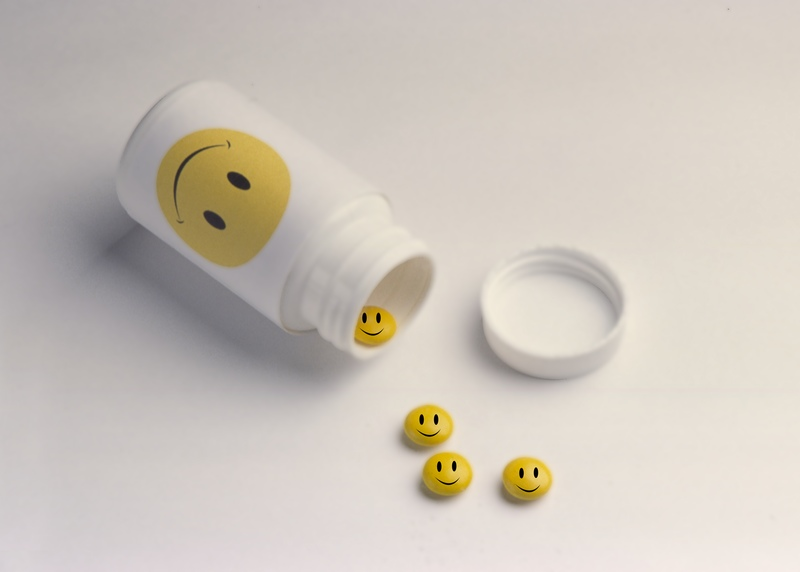

Living a healthy lifestyle can help prevent chronic diseases and long-term illnesses. Feeling good about yourself and taking care of your health are important for your self-esteem and self-image. Mantain a healthy lifestyle by doing what is right for your body and mind.
Headache Remedy
Cold Remedy
Body Pains Remedy
Acne Remedy
Muscle Strain
Sleep Hygiene
 Mental health refers to our overall emotional, psychological, and social well-being. It affects how we think, feel, and behave, and influences our ability to cope with the challenges of daily life. Good mental health is characterized by a positive sense of self-worth, the ability to form and maintain healthy relationships, and the ability to manage and regulate our emotions. Mental health encompasses a wide range of factors, including our genetics, our environment, and our life experiences. It is not simply the absence of mental illness, but rather the presence of positive mental health factors such as resilience, optimism, and a sense of purpose. Mental illness, on the other hand, refers to a wide range of conditions that affect a person's thinking, mood, or behavior. Examples of mental illnesses include depression, anxiety disorders, bipolar disorder, schizophrenia, and eating disorders, among others. These conditions can significantly impact a person's ability to function in their daily life.
Depression is the most common mental health issue that people battle daily. it is caused by sadness, loneliness, grief. This is a topic i will be approaching this topic from a more natural point of view than a logical one. Depression is linked to a lot of mental health issues... at the root of other mental health issues, you will find Depression, depression is like being colorblind and being constantly told how colorful the world is... Life is not easy for most people these days especially. And if you happen to face this problem of Depression, i want to remind you that you are not alone and most people face the same issue in private and just mask it in public, people are honestly going through a lot of issues that can't be seen on their faces when they're out in public or in your presence. Don't try to understand depression, It affects different people differently.
“ Depression, suffering and anger are all a part of being human ” — Janet Fitch
“ you say you're 'depressed', all i see is resilience. You are allowed to feel messed up and inside out. It doesn't mean you're defective- it just means you're human. ” — David Mitchell, Cloud Atlas
“ Life is ten percent what you experience and ninety percent how you respond to it ” — Dorothy M. Neddermeyer
“ Dead but not allowed to die. Alive, but as good as dead. ” — Suzanne Collins
“ Depression is being colorblind and constantly told how colorful the world is. ” — ATTICUS
“ There are wounds that never show on the body that are deeper and more hurtful than anything that bleed ” — Laurell K. Hamilton, Mistral's kiss
“ Depression is melancholy minus its charms ” — Susan Sontag
“ Mental pain is less dramatic than physical pain but it is more common and also more hard to bear. The frequent attempt to conceal mental pain increases the burden: It is easier to say my "tooth is aching" than to say my "heart is broken" ” — CS Lewis
“ Having anxiety and depression is like being scared and tired at the same time. It's the fear of failure, but no urge to be productive. It's wanting friends but hate socializing. It's wanting to be alone but not wanting to be lonely. It's feeling everything at once then feeling paralyzingly numb. ” — Anonymous
“ You may bleed how i bleed but we were both cut different ” — My sis
“ Perhaps depression is caused by asking oneself too many unanswerable questions. ” — Miriam Toews, Swing Low
“ If you could read my mind, you wouldn't be smiling. ” — Tamara Ireland Stone, Every Last Word
“ Depression weighs you down like a rock in a river. You don't stand a chance. You can fight and pray and hope you have the strength to swim, but sometimes, you have to let yourself sink. Because you'll never know true happiness until someone or something pulls you back out of that river--and you'll never believe it until you realize it was you, yourself who saved you. ” — Tamara Ireland Stone, Every Last Word
“ Whoever told you that life would be easy, i promise that person was lying to you ” — NF, Wake Up
“ You don't like me?. That makes two of us ” — NF, No name
“ I'd rather be alone i am not good in crowds ” — NF, Outcast
“Life is too short to let it pass you by. We spend a lot of time crying over wasted time. ” — NF
“ We’ve all got somethin’ that we trapped inside that we try to suffocate, you know, hopin’ it dies. ” — NF: The search
“ What's the point of having guns if you can't aim? What's the point of having blood with no veins? What's the point of having love with no pain? ” — NF: Intro III
“ I want to know what it’s like to be happy. I want to know what it’s like to wake up in the morning and feel like it’s real when I’m laughing. I want to know what it’s like to sit down with my friends and feel like they might understand me. ” — NF: i wanna know
“ My mind is a home I’m trapped in and it’s lonely inside this mansion ” —NF: Mansion
“ Wake up every morning thinking I’mma have a bad day. ” —NF: No Name
“ I’ve never been married, but I’ve felt divorced. ” — NF:
“ Is it me or the fear talking? ” — NF: Intro III
“ I heard that Pictures dont change, just the people inside of them do ” — NF: Lost in the moment
“ just teaching 'em something they couldn't learn in they colleges This is for the kids feeling like they live at the bottom and every day of they lives looks like it's darker than Halloween Yeah, you ain't alone out there, look around you—we got a lot of fans in here ” — NF: Outro
“ ‘Cause I thought you had me in prison this whole time, but I'm the one holding' the keys ” — NF: Intro III
“ Look at the world we live in, defined by comment sections. ” — NF: Remember this
“ A lot of people know me, but they don't know me well. ” — NF: Why
“ I’m underwater but I feel like I’m on top of it ” — NF: Paralyzed
1. Urinating In a pool is dangerous for your heart
2. Anxieties can cause difficulty concentrating, restlessness, frustration and serious physical problems like weakness, shortness of breath, rapid heart rate, and dizziness.
3. Eating eggs improves your reflexes
4. Your blood makes up nearly one-tenth of your total body weight
5. the scent of apple can ease claustrophobia
6. Fingernails grow faster on your dominant hand
7. Chewing gums sharpen your focus
8. Procrastination and impulsivity are inherited behaviours
9. Oatmeal helps fight depression
10.Bananas can boost your mood too
11. stress heightens allergies
12. Exercising when you're young slows bone deterioration in old age
13. Eating chocolate can help make your skin look healthier
14. Owning a dog can lower your risk of heart disease
15. You can tell if someone has high cholesterol based on their skin
16. Both depression and anxiety can cause neck and shoulder issues
17. Saying thank you measurably improves your mood
18.The human brain is more active at night than during the day
19. We are about 70 percent water
20. It is believed that the main purpose of eyebrows is to keep sweat out of the eyes
1. Eat a balanced diet: Include a variety of fruits, vegetables, whole grains, lean proteins, and healthy fats in your diet. Avoid processed and sugary foods as much as possible.
2. Stay hydrated: Drink plenty of water throughout the day to keep your body hydrated and maintain optimal bodily functions.
3. Exercise regularly: Aim for at least 150 minutes of moderate-intensity exercise or 75 minutes of vigorous-intensity exercise per week. Incorporate a mix of aerobic and strength-training activities.
4. Get enough sleep: Aim for 7-8 hours of sleep per night to allow your body to rest and recover.
5. Manage stress: Engage in stress-reducing activities like meditation, deep breathing, or yoga to help manage stress levels.
6. Avoid smoking and excessive alcohol consumption: Both smoking and excessive alcohol consumption can have negative effects on your health.
7. Get regular check-ups: Visit your doctor regularly for check-ups and preventive screenings.
8. Practice good hygiene: Wash your hands frequently, cover your mouth when coughing or sneezing, and avoid touching your face to prevent the spread of germs.